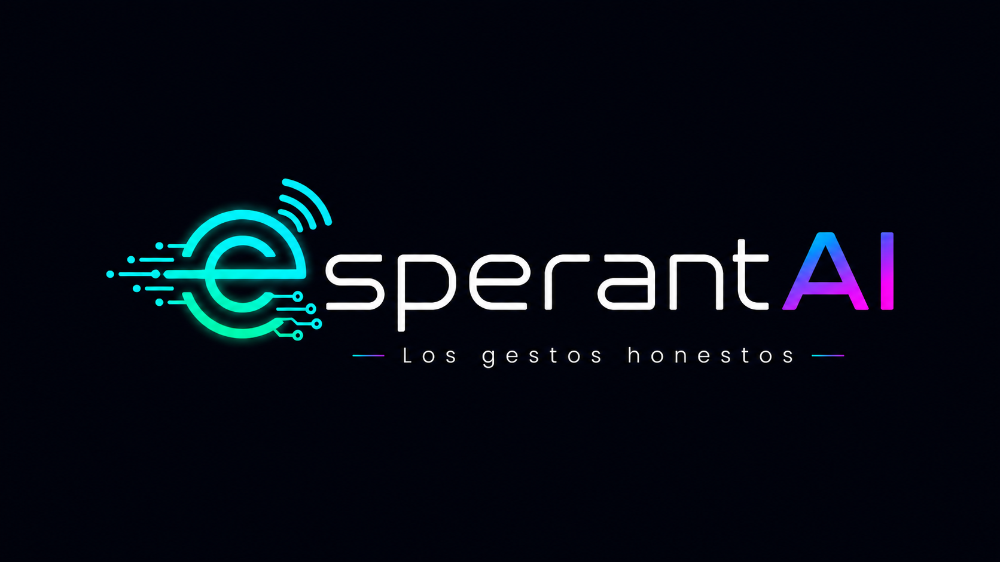
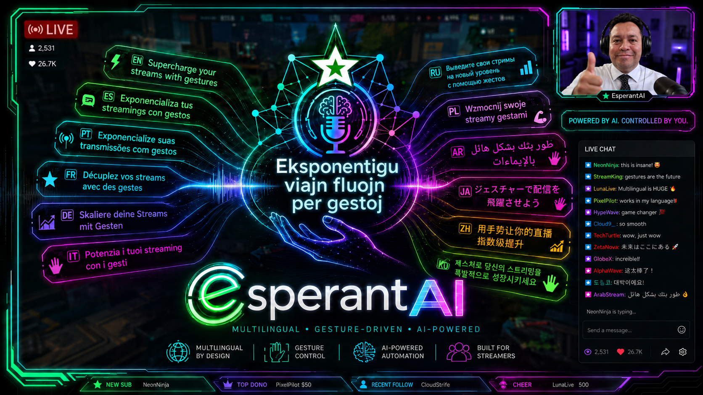

Tu cara y tus manos disparan escenas, overlays y alertas en OBS, Streamlabs, vMix, PRISM y XSplit. En tiempo real, sin hardware extra, sin atajos memorizados, sin cortar el ritmo de la transmisión.
✓ Activación instantánea · ✓ Hasta 3 dispositivos · ✓ 100% local · ✓ Updates incluidos
Tu cara y tus manos se convierten en acciones de streaming: escenas, sonidos, overlays y respuestas a eventos.
Una mirada, una sonrisa o un giro de cabeza pueden cambiar de escena, lanzar una alerta o preparar tu siguiente momento de stream.
Un gesto puede cambiar escena, reproducir sonido y mostrar una notificación. Ideal para reacciones, celebraciones y pausas limpias.
OBS Studio, Streamlabs Desktop, vMix, PRISM Live Studio y XSplit Broadcaster.
Subs, donaciones, bits o Super Chats pueden sugerir escenas de agradecimiento, tip jars discretos o alertas sin presionar a la audiencia.
La app detecta el idioma de tu sistema operativo y carga el locale correspondiente. Cambio manual también disponible.
Todo el procesamiento de video corre 100% local en tu GPU. Cero video enviado a la nube. Cero tracking.
13 locales completos con auto-detección del sistema. Tu audiencia mundial te entiende, y nosotros te entendemos a ti.

Hardware mínimo accesible. Funciona en cualquier OS moderno.
"Las expresiones faciales son universales en todas las culturas humanas."
— Paul Ekman, "Universals and Cultural Differences in Facial Expressions of Emotion", 1972El Esperanto fue un intento humano de crear un idioma universal en 1887. Falló como idioma hablado, pero el ideal vive. Los gestos sí son universales — pre-lingüísticos, biológicos, millones de años de evolución. EsperantAI es la inteligencia artificial que finalmente habla el único lenguaje que todos los humanos compartimos.
Por eso EsperantAI marca cada gesto como 🌐 Universal o ⚠️ Cultural. Tú decides qué gestos usar según tu audiencia global.
¿Quieres ver el flujo completo? 5 minutos: setup en OBS, calibración de gestos, combo triggers en acción y multi-action por gesto.
Sin Free tier. Sin trial. Eliges Pro o Pro+, recibes tu license key y activas todo el flujo comercial al instante.
Para streamers individuales con OBS + 1-4 plataformas.
Para streamers que monetizan y quieren combo triggers + bridge multi-plataforma.
Pago seguro vía LemonSqueezy · Cualquier plan permite hasta 3 dispositivos · Producto digital final · Sin reembolso después de activación · Actualizaciones de la versión comercial incluidas según términos de compra
Compras Pro o Pro+, recibes tu license key por correo, abres la app, pegas la key y conectas tu software de streaming. La activación guiada te lleva de compra → key → stream sin perder el contexto.
Pro incluye todo lo que un streamer individual necesita: 5 software de streaming, 4 plataformas (Twitch/YouTube/Kick/Trovo), 18 triggers, calibración personalizada, hand gestures, todos los gestos universales.
Pro+ agrega 3 features adicionales: combo triggers (evento de plataforma + gesto físico de confirmación, evita falsos positivos al recibir donaciones), StreamElements bridge (una sola integración para Twitch + YouTube + Facebook unificados) y triggers ilimitados.
Pro+ es la elección recomendada si monetizas con donaciones/subs y quieres confirmar reacciones con un gesto físico antes de que se disparen en tu stream.
Sí. EsperantAI corre en cualquier sistema operativo con navegador moderno (Chrome / Edge / Firefox). En Mac y Linux usas la versión web. En Windows también puedes usar el instalador local.
Una licencia se activa en hasta 3 dispositivos. Si pierdes uno (cambio de PC, reinstalación), puedes desactivarlo desde tu panel y activar el nuevo.
No. Todo el procesamiento de detección facial corre 100% local en tu navegador, usando tu GPU (Human.js + WebGL). Cero video / imágenes se envían fuera de tu computadora. La única conexión externa es la validación periódica de tu license key contra LemonSqueezy (~7 días entre validaciones).
No siempre. La licencia se valida online al activar y se revalida cada 7 días. Si pierdes internet, EsperantAI sigue funcionando hasta 7 días sin reconexión (grace period). Pasados 7 días offline, se bloquea hasta reconectar.
Un Stream Deck XL cuesta $249 USD y requiere espacio físico en tu escritorio + tener las manos disponibles para presionar botones. EsperantAI funciona con tu webcam (que ya tienes), no requiere espacio físico, y funciona aunque tus manos estén ocupadas con el control, la guitarra, el cuchillo de cocina o el lápiz de dibujo.
No. EsperantAI se vende solamente en sus planes Pro y Pro+. No ofrecemos Free tier, demo descargable, ni período de prueba. La razón: el producto requiere activación de licencia para funcionar contra el backend de validación, y la activación es irreversible (ver Política de no reembolso).
Si quieres ver EsperantAI en acción antes de comprar, mira los videos de demostración en esta misma página (próximamente) y revisa el manual de usuario con capturas reales de la app.